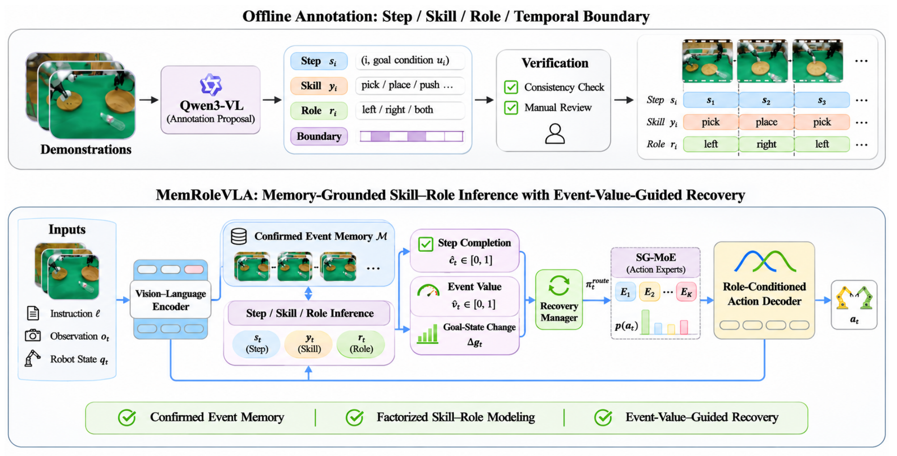

Video could not be loaded.
Abstract
In long-horizon bimanual manipulation, what to do next and which arm should execute it depend on which steps have already been completed, rather than only on the current observation window. Policies with short observation windows may advance before a step is complete or initiate recovery at an inappropriate moment. Existing atomic-skill methods do not explicitly exploit the history of online-confirmed completed events and therefore remain vulnerable to repetitive tasks and visual aliasing. We propose MemRoleVLA, a vision–language–action model that grounds step, skill, and role inference in confirmed event memory to guide atomic-skill action experts. A step-completion head estimates whether the active step has reached its goal; after continuous confirmation, the execution manager commits an evidence keyframe to memory through an idempotent single-write operation. The event memory is fused with the current observation to infer the next step, atomic skill, and execution role. The skill posterior routes shared action experts, while a role-conditioned action prior guides bimanual action generation. An event-value head, trained with successful demonstrations and outcome-labeled autonomous rollouts, estimates whether the current attempt can still succeed within its execution budget and supports bounded recovery together with observed goal-state changes. On real-world memory-dependent bimanual tasks, MemRoleVLA improves average success by 37.5 and 25.3 percentage points over π0.5 and AtomicVLA*, respectively. Here * denotes our bimanual reproduction of AtomicVLA.
Method

Experiments
MemRoleVLA reaches 75.5% average success versus 38.0% for π0.5 and 50.25% for AtomicVLA*.
| Method | Sorting | Food | Drawer | Wiping | Avg. Success (%) |
|---|---|---|---|---|---|
| π0.5 | 40/100 | 38/100 | 31/100 | 43/100 | 38.00 |
| AtomicVLA* | 55/100 | 52/100 | 49/100 | 45/100 | 50.25 |
| MemRoleVLA | 80/100 | 76/100 | 76/100 | 70/100 | 75.50 |
Table 2. End-to-end success on four memory-dependent long-horizon tasks. Task entries report successes/trials, aggregated over five training seeds with 20 real-robot trials per seed. AtomicVLA* denotes our bimanual reproduction of AtomicVLA.